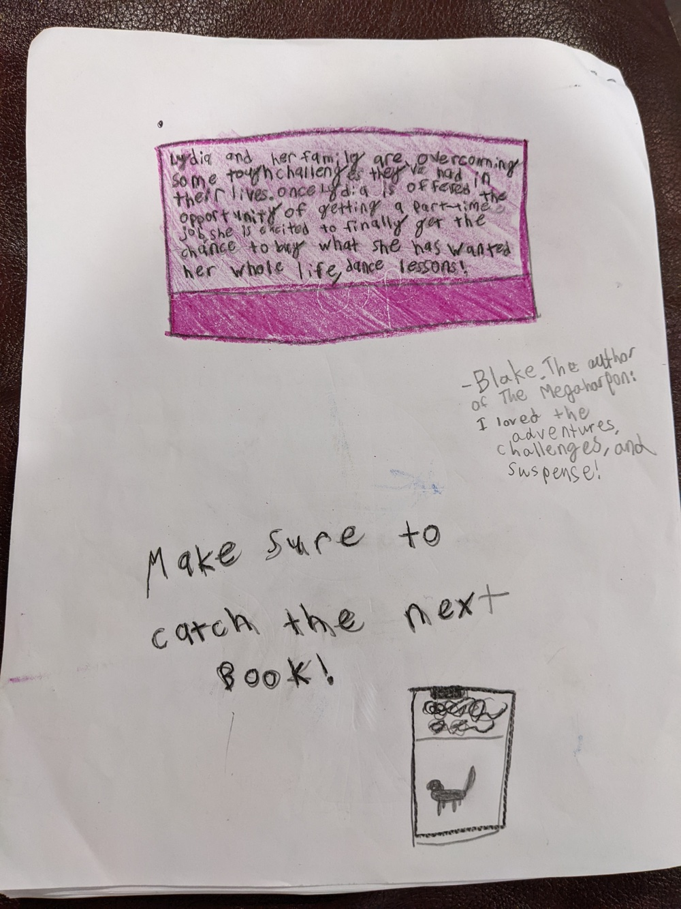

My name is Lydia and I am nine years old. I live in an old, one story, five room house. I eat out for my one meal each day, lunch. You see, my family’s poor. But this is the story of when I started to overcome that.
“Mom, can I get dance lessons?” I asked. But this one time, I got a different answer.
“Lydia, your dad and I have been talking about it, and we think it’s time, now that you’re nine, for you to get a job.”
“Oh, really?” I said. “That would be the best!”
“We don’t have time tonight, but tomorrow morning you can go to the library and search the web for a job.”
“OMG thanks!” I shouted.
“Now run off and do your Friday chores.” Mom instructed me.
“Okay!” Then I yelled, “Everyone out of the living room and kitchen!” I heard my mom and dad’s footsteps as they thundered to their room. Then, I grabbed the broom and ran into the kitchen. I merrily moved the broom back and forth across the floor.
When I was done, I ran to my room, looked around and decided on my battered, too tight leotard and skirt.
“Are you done?” my mom asked.
“Yes!” I called back.
“What are you doing?” She questioned me.
“Practicing dancing!” I heard her walk to my room.
“I should have guessed.” She said. “Why don’t you go to bed. It’s already 8:30, and you’ll want to wake up bright and early to go to the library tomorrow.”
“Okay!” Then I fluffed up my pillow, and fell asleep on my bed.
I woke up the next morning to bright sunshine. I slowly got out of bed and dressed. Then I went downstairs and headed out the door to the library.
It was deserted at the library. I sat in front of one of the computers, turned it on, and searched up: Jobs for young people. I scrolled through and found a link for a bookstore job for eight years to twelve years old. I clicked a link and filled out an application for the job. It said that my interview for the job would be tomorrow at 10:30. Then I shut the computer and skipped back home.
When I got home, I paced. I didn’t know what to do. I tried reading, but that only made me more excited, and nervous. When I finally decided on what to do, it was playing the only game my family has. We’ve played it like a million times, but it’s the kind of game that changes every time, so you can never get tired of it. Me and my family laughed and played until the night got dark.
I felt a warm hand on my back. “Wake up, sweetie.” I heard a voice say. I opened my eyes to see my mom standing over my bed.
“What?” I grumbled sleepily.
“You have your interview today. It’s 10:00.” She responded. That got me up. I quickly dressed and ran downstairs.
“I’ll be back soon!” I called to my family as I ran out the door.
When I got to the bookstore it was 10:25. I pushed my black hair behind my ear, and walked in.
When I got in, I stepped up to the front desk and said: “I’m here for a job interview.”
“Name?” The woman at the desk asked me absently without looking up from her papers.
“Lydia.” I said nervously. The woman’s head suddenly snapped up.
“Um, you need to get in. That door right over there.” She pointed to a dark, scary looking door. I walked to the door and went in.
“Ahh!” I yelled when I got in the room. I couldn’t see anything! The lights were so bright they were blinding!
“You’re late.” I heard a deep voice say. When my eyes finally adjusted I saw a large, dark skinned man. I checked my watch. I did not point out to him that it was exactly 10:30, so, therefore, I was right on time.
“Sit down.” The manager said. I sat on the stiff wooden chair that was in front of his desk, prepared for visitors. It was uncomfortable. “Why are you here?” He asked me.
“I… came for an interview.” I responded.
“Really? How old are you?” He demanded in his gruff voice.
“I… um… nine.” I said in a small voice.
“Nine!” He roared. “Who let a nine year-old into my bookshop? Get out, and don’t come back!” I reluctantly walked out of the office, tears burning in my eyes. When I stepped outside, I ran home, crying.
When I got home, I ran to my room and dropped onto my pillow.
My mom came up after a while. “Interview not go to well?” She asked me. I nodded, sniffling. “Oh it’s okay.” She assured me. “I didn’t get a job until I was thirteen, and I started when I was nine.” I giggled. Then I sat up.
“Can I go to the library?” I asked.
“Sure.” My mom said.
When I got to the library, I searched for jobs and, after neglecting a job for a lifeguard (I decided I was too young), I chose a job at a ‘doggy daycare’. In the description I learned that it was a place where dogs stay when their owners are on vacation. I would have an interview at 12:30 that day.
After an early lunch I went into town for the interview. When I got there the building was white stone. I stepped inside and walked to the front desk.
“Yes?” A lady with a kind voice said.
“I’m here for an interview.” I told her.
“Lydia?” She guessed, and I nodded.
“First door on the right.” She said, pointing down a hallway. I walked down the hall, chose the correct door, and walked in.
I was greeted by a nice man in a suit. His nametag read: Manager Evan Rubin. I greeted him with a handshake, and he guestered to a seat. I sat down, and he asked me, “How old are you?” I gulped.
“Nine.”
“Oh!” Mr. Rubin said, nodding approvingly. “It would be nice to get some younger kids in the area. Do you have any experience with animals?”
“No, not really.” I said slowly.
“That’s fine, we could teach you.” He said, shrugging it off. “Now we will go and have a test run with a dog.” I followed him out the door and further down the hallway.
Eventually we came to a big, bright room filled with barking dogs. The Manager led me to a large pen with a big, black, furry dog in it. I watched how Mr. Rubin undid the latch, in case I really did get the job. When he opened the door and walked in, I followed. I leaned down to see the dog’s collar. The tag read: Luna. “Good girl, Luna.” I whispered, stroking her carefully. Then I worriedly glanced up at the manager. He was smiling.
“Can you come back tomorrow for a shift?” He asked. “We’re running low on workers at 10:00-2:00.”
“You mean I got the job?” I asked. “Of course! Thank you!” Then I ran back to the main room, out the door, and all the way home.
